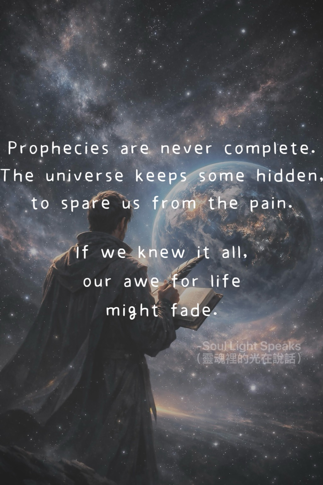

Prophecies are never complete.
The universe keeps some hidden,
to spare us from the pain.
If we knew it all,
our awe for life
might fade.
The universe keeps some hidden,
to spare us from the pain.
If we knew it all,
our awe for life
might fade.
Why cannot prophets always be right?
Only a few visions ever come true.
Perhaps the universe spares us from bearing all the pain
and keeps parts of the future hidden.
It fears that if we grow used to knowing everything,
we might slowly lose our awe and reverence for life.